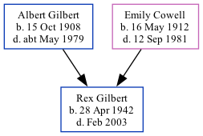

Rex Albert Frederick Gilbert 1942 - 2003 [ Home ] | [ Calendar ] | [ Surnames Index ] | [ Family History ]The older of 2 children of Albert Gilbert (a house painter) and Emily Cowell Rex Gilbert , a cousin on the mother's side of Nigel Horne , was born in Thanet, Kent, England on Apr 28, 19421,2,3 .
He died in Thanet in Feb 20033 .
Parents Albert Edward was born on Oct 15, 1908Emily Edith was born on May 16, 1912Citations England & Wales deaths 1837-2007 - Findmypast England & Wales, Birth Index: 1916-2005 Online publication - Provo, UT, USA: The Generations Network, Inc., 2008.Original data - General Register Office. England and Wales Civil Registration Indexes. London, England: General Register Office. © Crown copyright. Published by permission of the Cont England & Wales, Death Index: 1984-2005 Online publication - Provo, UT, USA: The Generations Network, Inc., 2007.Original data - General Register Office. England and Wales Civil Registration Indexes. London, England: General Register Office. © Crown copyright. Published by permission of the Cont Notes Initials were RAF because his father was in the R.A.F.
Media England & Wales births 1837-2006 - BMD/B/1942/2/AZ/000459/125 England & Wales deaths 1837-2007 - BMD/D/2003/2/84760933 Family Tree Map
Generated by ged2site . Last updated on Feb 28, 2025